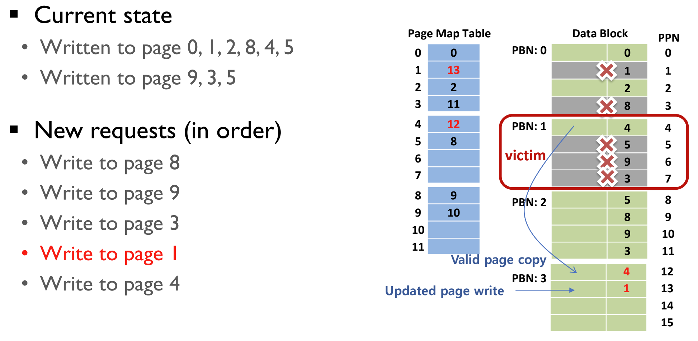
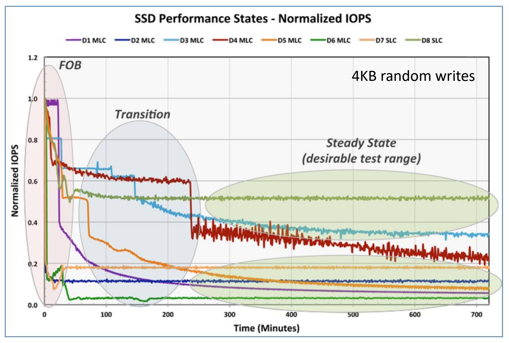

<!DOCTYPE html>
<html><head><title>12. File Translation Layers, FTL</title><meta charSet="utf-8"/><meta name="viewport" content="width=device-width, initial-scale=1.0"/><meta property="og:title" content="12. File Translation Layers, FTL"/><meta property="og:description" content="서울대학교 컴퓨터공학과 김진수 교수님의 &amp;quot;고급 운영체제&amp;quot; 강의를 필기한 내용입니다. 다소 잘못된 내용과 구어적 표현 이 포함되어 있을 수 있습니다. SSD FTL § SSD 는 read + program + erase 밖에 안되기 때문에 이것을 기존의 sector r/w 인터페이스로 전환해주는 것이 File Translation Layer, FTL 이다."/><meta property="og:image" content="https://mdg.haeramk.im/static/og-image.png"/><meta property="og:width" content="1200"/><meta property="og:height" content="675"/><link rel="icon" href="../../static/icon.png"/><meta name="description" content="서울대학교 컴퓨터공학과 김진수 교수님의 &amp;quot;고급 운영체제&amp;quot; 강의를 필기한 내용입니다. 다소 잘못된 내용과 구어적 표현 이 포함되어 있을 수 있습니다. SSD FTL § SSD 는 read + program + erase 밖에 안되기 때문에 이것을 기존의 sector r/w 인터페이스로 전환해주는 것이 File Translation Layer, FTL 이다."/><meta name="generator" content="Quartz"/><link rel="preconnect" href="https://fonts.googleapis.com"/><link rel="preconnect" href="https://fonts.gstatic.com"/><link href="../../index.css" rel="stylesheet" type="text/css" spa-preserve/><link href="https://cdn.jsdelivr.net/npm/katex@0.16.0/dist/katex.min.css" rel="stylesheet" type="text/css" spa-preserve/><link href="https://fonts.googleapis.com/css2?family=IBM Plex Mono&amp;family=Gowun Batang:wght@400;700&amp;family=Gowun Dodum:ital,wght@0,400;0,600;1,400;1,600&amp;display=swap" rel="stylesheet" type="text/css" spa-preserve/><script src="../../prescript.js" type="application/javascript" spa-preserve></script><script type="application/javascript" spa-preserve>const fetchData = fetch(`../../static/contentIndex.json`).then(data => data.json())</script></head><body data-slug="originals/aos.spring.2024.cse.snu.ac.kr/12.-File-Translation-Layers,-FTL"><div id="quartz-root" class="page"><div id="quartz-body"><div class="left sidebar"><h1 class="page-title "><a href="../..">Madison Digital Garden</a></h1><div class="spacer mobile-only"></div><div class="search "><div id="search-icon"><p>Search</p><div></div><svg tabIndex="0" aria-labelledby="title desc" role="img" xmlns="http://www.w3.org/2000/svg" viewBox="0 0 19.9 19.7"><title id="title">Search</title><desc id="desc">Search</desc><g class="search-path" fill="none"><path stroke-linecap="square" d="M18.5 18.3l-5.4-5.4"></path><circle cx="8" cy="8" r="7"></circle></g></svg></div><div id="search-container"><div id="search-space"><input autocomplete="off" id="search-bar" name="search" type="text" aria-label="Search for something" placeholder="Search for something"/><div id="results-container"></div></div></div></div><div class="darkmode "><input class="toggle" id="darkmode-toggle" type="checkbox" tabIndex="-1"/><label id="toggle-label-light" for="darkmode-toggle" tabIndex="-1"><svg xmlns="http://www.w3.org/2000/svg" xmlnsXlink="http://www.w3.org/1999/xlink" version="1.1" id="dayIcon" x="0px" y="0px" viewBox="0 0 35 35" style="enable-background:new 0 0 35 35;" xmlSpace="preserve"><title>Light mode</title><path d="M6,17.5C6,16.672,5.328,16,4.5,16h-3C0.672,16,0,16.672,0,17.5    S0.672,19,1.5,19h3C5.328,19,6,18.328,6,17.5z M7.5,26c-0.414,0-0.789,0.168-1.061,0.439l-2,2C4.168,28.711,4,29.086,4,29.5    C4,30.328,4.671,31,5.5,31c0.414,0,0.789-0.168,1.06-0.44l2-2C8.832,28.289,9,27.914,9,27.5C9,26.672,8.329,26,7.5,26z M17.5,6    C18.329,6,19,5.328,19,4.5v-3C19,0.672,18.329,0,17.5,0S16,0.672,16,1.5v3C16,5.328,16.671,6,17.5,6z M27.5,9    c0.414,0,0.789-0.168,1.06-0.439l2-2C30.832,6.289,31,5.914,31,5.5C31,4.672,30.329,4,29.5,4c-0.414,0-0.789,0.168-1.061,0.44    l-2,2C26.168,6.711,26,7.086,26,7.5C26,8.328,26.671,9,27.5,9z M6.439,8.561C6.711,8.832,7.086,9,7.5,9C8.328,9,9,8.328,9,7.5    c0-0.414-0.168-0.789-0.439-1.061l-2-2C6.289,4.168,5.914,4,5.5,4C4.672,4,4,4.672,4,5.5c0,0.414,0.168,0.789,0.439,1.06    L6.439,8.561z M33.5,16h-3c-0.828,0-1.5,0.672-1.5,1.5s0.672,1.5,1.5,1.5h3c0.828,0,1.5-0.672,1.5-1.5S34.328,16,33.5,16z     M28.561,26.439C28.289,26.168,27.914,26,27.5,26c-0.828,0-1.5,0.672-1.5,1.5c0,0.414,0.168,0.789,0.439,1.06l2,2    C28.711,30.832,29.086,31,29.5,31c0.828,0,1.5-0.672,1.5-1.5c0-0.414-0.168-0.789-0.439-1.061L28.561,26.439z M17.5,29    c-0.829,0-1.5,0.672-1.5,1.5v3c0,0.828,0.671,1.5,1.5,1.5s1.5-0.672,1.5-1.5v-3C19,29.672,18.329,29,17.5,29z M17.5,7    C11.71,7,7,11.71,7,17.5S11.71,28,17.5,28S28,23.29,28,17.5S23.29,7,17.5,7z M17.5,25c-4.136,0-7.5-3.364-7.5-7.5    c0-4.136,3.364-7.5,7.5-7.5c4.136,0,7.5,3.364,7.5,7.5C25,21.636,21.636,25,17.5,25z"></path></svg></label><label id="toggle-label-dark" for="darkmode-toggle" tabIndex="-1"><svg xmlns="http://www.w3.org/2000/svg" xmlnsXlink="http://www.w3.org/1999/xlink" version="1.1" id="nightIcon" x="0px" y="0px" viewBox="0 0 100 100" style="enable-background='new 0 0 100 100'" xmlSpace="preserve"><title>Dark mode</title><path d="M96.76,66.458c-0.853-0.852-2.15-1.064-3.23-0.534c-6.063,2.991-12.858,4.571-19.655,4.571  C62.022,70.495,50.88,65.88,42.5,57.5C29.043,44.043,25.658,23.536,34.076,6.47c0.532-1.08,0.318-2.379-0.534-3.23  c-0.851-0.852-2.15-1.064-3.23-0.534c-4.918,2.427-9.375,5.619-13.246,9.491c-9.447,9.447-14.65,22.008-14.65,35.369  c0,13.36,5.203,25.921,14.65,35.368s22.008,14.65,35.368,14.65c13.361,0,25.921-5.203,35.369-14.65  c3.872-3.871,7.064-8.328,9.491-13.246C97.826,68.608,97.611,67.309,96.76,66.458z"></path></svg></label></div></div><div class="center"><div class="page-header"><div class="popover-hint"><h1 class="article-title ">12. File Translation Layers, FTL</h1><p class="content-meta ">Apr 09, 2024, 17 min read</p><ul class="tags "><li><a href="../../tags/강의록" class="internal tag-link">#강의록</a></li><li><a href="../../tags/snu_cse_ms_aos24s" class="internal tag-link">#snu_cse_ms_aos24s</a></li></ul></div></div><article class="popover-hint"><blockquote class="callout" data-callout="info">
<div class="callout-title">
                  <div class="callout-icon"><svg xmlns="http://www.w3.org/2000/svg" width="100%" height="100%" viewBox="0 0 24 24" fill="none" stroke="currentColor" stroke-width="2" stroke-linecap="round" stroke-linejoin="round"><circle cx="12" cy="12" r="10"></circle><line x1="12" y1="16" x2="12" y2="12"></line><line x1="12" y1="8" x2="12.01" y2="8"></line></svg></div>
                  <div class="callout-title-inner"><p>서울대학교 컴퓨터공학과 김진수 교수님의 &quot;고급 운영체제&quot; 강의를 필기한 내용입니다. </p></div>
                  
                </div>
</blockquote>
<blockquote class="callout" data-callout="warning">
<div class="callout-title">
                  <div class="callout-icon"><svg xmlns="http://www.w3.org/2000/svg" width="100%" height="100%" viewBox="0 0 24 24" fill="none" stroke="currentColor" stroke-width="2" stroke-linecap="round" stroke-linejoin="round"><path d="m21.73 18-8-14a2 2 0 0 0-3.48 0l-8 14A2 2 0 0 0 4 21h16a2 2 0 0 0 1.73-3Z"></path><line x1="12" y1="9" x2="12" y2="13"></line><line x1="12" y1="17" x2="12.01" y2="17"></line></svg></div>
                  <div class="callout-title-inner"><p>다소 잘못된 내용과 구어적 표현 이 포함되어 있을 수 있습니다. </p></div>
                  
                </div>
</blockquote>
<h2 id="ssd-ftl">SSD FTL<a aria-hidden="true" tabindex="-1" href="#ssd-ftl" class="internal"> §</a></h2>
<ul>
<li>SSD 는 read + program + erase 밖에 안되기 때문에 이것을 기존의 sector r/w 인터페이스로 전환해주는 것이 <em>File Translation Layer</em>, <em>FTL</em> 이다.</li>
<li>Address mapping - overwrite 가 안돼 위치가 바뀌니 위치 바뀌는 것을 추적하기 위한 것</li>
<li>이 DRAM 이 비싼 리소스이기 때문에 어떻게 address mapping 을 할지가 중요했다
<ul>
<li>적게 쓰면서 더 잘하기</li>
<li>Page mapping 과 block mapping 이 있고, 이들을 합친 hybrid mapping 의 등장</li>
<li>근데 최근의 ssd 는 그냥 page mapping ftl 을 사용한다고 한다.
<ul>
<li>그래서 zns 논문에서 page mapping ftl 을 지적했구만</li>
</ul>
</li>
</ul>
</li>
</ul>
<h2 id="page-mapping">Page Mapping<a aria-hidden="true" tabindex="-1" href="#page-mapping" class="internal"> §</a></h2>
<ul>
<li>용어정리를 좀 해보자
<ul>
<li><em>Logical Block Address</em> (<em>LBA</em>) 은 기존 HDD sector 에 대한 addressing system
<ul>
<li>즉, 보통 512byte 다.</li>
<li><em>Logical Sector Number</em> (<em>LSN</em>) 와 혼용해서 쓰는 용어인듯</li>
</ul>
</li>
<li><em>Logical Page Number</em> (<em>LPN</em>) 은 일반적으로 4Ki 사이즈인 단위이다
<ul>
<li>그래서 LBA 8 개가 하나의 LPN 이 됨</li>
</ul>
</li>
<li><em>Physical Page Number</em> (<em>PPN</em>) 은</li>
</ul>
</li>
<li>모든 <em>Logical Page Number</em> (<em>LPN</em>) 을 <em>Physical Page Number</em> (<em>PPN</em>) 에 대응시켜 변환하는 것을 <em>Page Mapping</em> 이라고 한다.</li>
<li>이 매핑은 <em>Page Mapping Table</em> (<em>PMT</em>) 이라는 테이블을 이용한다.
<ul>
<li>이놈은 <em>Logical-to-Physical</em> (<em>L2P</em>) <em>Table</em> 이라고도 불린다.</li>
<li>PMT 의 entry 개수가 OS 에서 보이는 page 개수가 된다.</li>
</ul>
</li>
<li>L2P table 의 사이즈는 SSD 사이즈의 1/1024 이다:
<ul>
<li>1Ti SSD 를 생각해 보자.</li>
<li>그럼 SSD 의 용량을 byte 단위로 생각하면 <span class="math math-inline"><span class="katex"><span class="katex-html" aria-hidden="true"><span class="base"><span class="strut" style="height:0.8141em;"></span><span class="mord"><span class="mord">2</span><span class="msupsub"><span class="vlist-t"><span class="vlist-r"><span class="vlist" style="height:0.8141em;"><span style="top:-3.063em;margin-right:0.05em;"><span class="pstrut" style="height:2.7em;"></span><span class="sizing reset-size6 size3 mtight"><span class="mord mtight"><span class="mord mtight">40</span></span></span></span></span></span></span></span></span></span></span></span></span> byte 가 될것이고, (LPN 크기는 4Ki = <span class="math math-inline"><span class="katex"><span class="katex-html" aria-hidden="true"><span class="base"><span class="strut" style="height:0.8141em;"></span><span class="mord"><span class="mord">2</span><span class="msupsub"><span class="vlist-t"><span class="vlist-r"><span class="vlist" style="height:0.8141em;"><span style="top:-3.063em;margin-right:0.05em;"><span class="pstrut" style="height:2.7em;"></span><span class="sizing reset-size6 size3 mtight"><span class="mord mtight"><span class="mord mtight">12</span></span></span></span></span></span></span></span></span></span></span></span></span> byte 이므로) SSD 에는 <span class="math math-inline"><span class="katex"><span class="katex-html" aria-hidden="true"><span class="base"><span class="strut" style="height:0.8141em;"></span><span class="mord"><span class="mord">2</span><span class="msupsub"><span class="vlist-t"><span class="vlist-r"><span class="vlist" style="height:0.8141em;"><span style="top:-3.063em;margin-right:0.05em;"><span class="pstrut" style="height:2.7em;"></span><span class="sizing reset-size6 size3 mtight"><span class="mord mtight"><span class="mord mtight">28</span></span></span></span></span></span></span></span></span></span></span></span></span> 개의 LPN 이 매핑되어야 할 것이다.</li>
<li>L2P entry 하나의 사이즈는 4byte 라는 가정 하에, 전체 L2P table 의 크기는 <span class="math math-inline"><span class="katex"><span class="katex-html" aria-hidden="true"><span class="base"><span class="strut" style="height:0.8141em;"></span><span class="mord"><span class="mord">2</span><span class="msupsub"><span class="vlist-t"><span class="vlist-r"><span class="vlist" style="height:0.8141em;"><span style="top:-3.063em;margin-right:0.05em;"><span class="pstrut" style="height:2.7em;"></span><span class="sizing reset-size6 size3 mtight"><span class="mord mtight"><span class="mord mtight">28</span></span></span></span></span></span></span></span></span><span class="mspace" style="margin-right:0.2222em;"></span><span class="mbin">∗</span><span class="mspace" style="margin-right:0.2222em;"></span></span><span class="base"><span class="strut" style="height:0.8889em;vertical-align:-0.1944em;"></span><span class="mord">4</span><span class="mord mathnormal">b</span><span class="mord mathnormal" style="margin-right:0.03588em;">y</span><span class="mord mathnormal">t</span><span class="mord mathnormal">e</span></span></span></span></span> = <span class="math math-inline"><span class="katex"><span class="katex-html" aria-hidden="true"><span class="base"><span class="strut" style="height:1.0085em;vertical-align:-0.1944em;"></span><span class="mord"><span class="mord">2</span><span class="msupsub"><span class="vlist-t"><span class="vlist-r"><span class="vlist" style="height:0.8141em;"><span style="top:-3.063em;margin-right:0.05em;"><span class="pstrut" style="height:2.7em;"></span><span class="sizing reset-size6 size3 mtight"><span class="mord mtight"><span class="mord mtight">30</span></span></span></span></span></span></span></span></span><span class="mord mathnormal">b</span><span class="mord mathnormal" style="margin-right:0.03588em;">y</span><span class="mord mathnormal">t</span><span class="mord mathnormal">e</span></span></span></span></span> = 1Gi 가 된다.</li>
<li>즉, SSD 의 크기인 1Ti 와 비교하면 1/1024 인 것.</li>
</ul>
</li>
<li>그래서 주소 변환 과정은 크게
<ul>
<li>우선 LSN 을 LPN 으로 변환하고</li>
<li>LPN 을 L2P 를 이용해 PPN 으로 바꾸는 과정으로 이루어진다.</li>
</ul>
</li>
</ul>
<h3 id="page-mapping-example">Page Mapping Example<a aria-hidden="true" tabindex="-1" href="#page-mapping-example" class="internal"> §</a></h3>
<p></p>
<ul>
<li>그림이 좀 헷갈릴 수 있는데 Data Block 에 적혀있는 저 012845 는 데이터이다; LPN 값을 write 한 것.</li>
<li>일단 new write 요청 (L2P mapping 이 되지 않은) 에 대해 PPN 이 어떻게 할당되는지 보자.
<ul>
<li>SSD 에서는 page 를 block 내에서 sequential write 한다.</li>
<li>즉, 들어온 LPN 에 따라 PPN 0 부터 쪽 write 한 다음에 mapping 만 해주는 것.</li>
<li>위의 예시에서 LPN 0, 1, 2, 8, 4, 5 에 write 했더니, PPN 은 0 ~ 5 에 write 되고 실제로 write 된 PPN 을 L2P table 의 LPN 에 매핑해놓은 것을 알 수 있다.
<ul>
<li>가령 LPN(8) write 의 경우에는 4번째 write 요청이기 때문에 PPN(3) 에 write 되었고, 따라서 L2P 의 LPN(8) entry 에 PPN(3) 이 적혀있는 것.</li>
</ul>
</li>
</ul>
</li>
<li>그리고 이때 read 요청은 그냥 이 L2P 를 쭉 따라가면 된다.
<ul>
<li>LPN(8) read 는 L2P 에 의해 PPN(3) read 로 바뀌고, 따라서 여기에 들어있던 데이터가 읽혀지는 것.</li>
</ul>
</li>
</ul>
<p></p>
<ul>
<li>이때 update 는 위처럼 작동한다.
<ul>
<li>LPN(5) 에 데이터 <code>5</code> 를 적고자 하면
<ul>
<li>…물론 기존에도 <code>5</code> 가 적혀 있지만 동일한 데이터로 update 한다고 가정</li>
</ul>
</li>
<li>다음으로 write 될 위치는 PPN(8) 이므로 여기에 <code>5</code> 를 적고</li>
<li>L2P 의 LPN(5) entry 를 PPN(8) 로 업데이트한다.</li>
<li>그리고 기존에 데이터가 저장되어 있던 PPN(5) 는 invalidate 시키게 되는 것.</li>
</ul>
</li>
</ul>
<h3 id="장단점">장단점<a aria-hidden="true" tabindex="-1" href="#장단점" class="internal"> §</a></h3>
<ul>
<li>장점으로는
<ul>
<li>LBA 어디든 써도 되니까 아주 유연</li>
<li>small size random write 시에 쓰고 mapping 만 하면 되니까 아주 빠름
<ul>
<li>read 도 마찬가지</li>
</ul>
</li>
</ul>
</li>
<li>단점은
<ul>
<li>DRAM 이 많이 필요
<ul>
<li>이 단점을 완화하기 위해 flash block 의 크기를 늘리는 방법도 있음
<ul>
<li>하지만 당연히 internal fragment 가 커지는 문제가 있다.</li>
</ul>
</li>
</ul>
</li>
<li>LFS 처럼 여유 공간을 구비해 둬야 함 - OP 공간
<ul>
<li>성능과 가용 공간의 trade off</li>
</ul>
</li>
</ul>
</li>
</ul>
<h2 id="garbage-collection">Garbage Collection<a aria-hidden="true" tabindex="-1" href="#garbage-collection" class="internal"> §</a></h2>
<ul>
<li><em>Garbage Collection</em> (<em>GC</em>) 에서는
<ul>
<li>GC 시에 page 를 옮길 Spare block 을 하나 이상 남겨두고</li>
<li>Invalid 가 가장 많은 놈을 greedy 로 택해서
<ul>
<li>보통은 그냥 단순하게 greedy 하게 victim 을 잡고, cost-benefit 은 잘 안쓰인다고 한다.</li>
</ul>
</li>
<li>Live block 을 옮기고 erase</li>
</ul>
</li>
<li>GC 로 옮겨진 데이터는 상대적으로 cold 이다 - 딴애들 죽을때까지 살아있었으니까
<ul>
<li>근데 새로 write 된 놈은 (비록 알 수는 없지만) 비교적 hot 일 확률이 높고</li>
<li>따라서 GC 로 뭉쳐진 곳에는 new data 를 잘 write 하지 않는다</li>
<li>그래서 한번에 많은 block 들을 GC 해 여기에 살아있는 애들을 최대한 뭉쳐놓게 된다.</li>
</ul>
</li>
<li>파일의 크기가 크면 cold 일 것이다 라고 가정하는 ftl 도 있음
<ul>
<li>보통 크기가 큰 image 같은 애들이 cold 이기 때문</li>
</ul>
</li>
<li>아니면 LBA 공간의 update count 로 history 관리하기도 하고</li>
<li>이런 아이디어도 있다
<ul>
<li>일단 처음에는 hot</li>
<li>gc 한번 살아남으면 warm</li>
<li>두번 살아남으면 cold</li>
<li>세번은 colder</li>
<li>이런식으로 계층화</li>
</ul>
</li>
</ul>
<h3 id="gc-example">GC Example<a aria-hidden="true" tabindex="-1" href="#gc-example" class="internal"> §</a></h3>
<p></p>
<ul>
<li>LPN(1) write 를 하고 싶은데, Spare block 인 PBN(3) 말고는 남아있는 것이 없는 상황.</li>
<li>그래서 일단 GC 를 한다.
<ul>
<li>Invalid 가 많은 PBN(1) 을 greedy 하게 victim 으로 선정해서</li>
<li>여기에 있는 PPN(4) 를 PPN(12) 로 옮긴다.</li>
<li>이에 따라 L2P 에 원래 PPN(4) 에 매핑되어 있던 LPN(4) 의 entry 가 PPN(12) 로 바뀐다.</li>
</ul>
</li>
<li>이후 LPN(1) write 를 수행
<ul>
<li>GC 이후 다음으로 write 될 PPN 은 PPN(13) 이기 때문에 여기에 write 를 하고</li>
<li>L2P 에는 LPN(1) entry 를 PPN(13) 으로 바꾼다.</li>
</ul>
</li>
</ul>
<h2 id="시간에-따른-ssd-성능-변화">시간에 따른 SSD 성능 변화<a aria-hidden="true" tabindex="-1" href="#시간에-따른-ssd-성능-변화" class="internal"> §</a></h2>
<p></p>
<ul>
<li><em>Fresh-out-of-box</em> (<em>FOB</em>) 는 SSD 구매 직후를 말한다: 모든 block 이 clean 이기 때문에 아주 빠름</li>
<li>FOB 를 넘어가면 GC 가 수행되서 성능이 저하되는 것이 보이고 (<em>Transition</em>)</li>
<li>성능이 일정하게 유지되면 <em>Steady State</em> 라고 부르고 이 시점에서의 성능과 성능 변동을 이용해 SSD 의 성능을 시험하는듯</li>
</ul>
<blockquote class="callout" data-callout="info">
<div class="callout-title">
                  <div class="callout-icon"><svg xmlns="http://www.w3.org/2000/svg" width="100%" height="100%" viewBox="0 0 24 24" fill="none" stroke="currentColor" stroke-width="2" stroke-linecap="round" stroke-linejoin="round"><circle cx="12" cy="12" r="10"></circle><line x1="12" y1="16" x2="12" y2="12"></line><line x1="12" y1="8" x2="12.01" y2="8"></line></svg></div>
                  <div class="callout-title-inner"><p>여기부터는 <code>2024-04-11</code> 강의</p></div>
                  
                </div>
</blockquote>
<h2 id="write-amplification">Write Amplification<a aria-hidden="true" tabindex="-1" href="#write-amplification" class="internal"> §</a></h2>
<ul>
<li>host 가 write 한 양 대비 실제로 write 된 양</li>
<li>GC 때문에 보통 추가적인 write 이 발생 (1이 넘음)</li>
<li>compression 이나 deduplication 을 이용하면 1 보다 작아지는 것도 가능하다</li>
</ul>
<h3 id="waf-calculation-example">WAF calculation example<a aria-hidden="true" tabindex="-1" href="#waf-calculation-example" class="internal"> §</a></h3>
<p></p>
<ul>
<li>직접해보자; LPN(0, 1, 2, 8, 4, 5, 9, 3, 5, 8, 9, 3, 1) 순서로 write 가 들어왔고, 이 과정에서 GC 가 발생해 LPN(4) 가 옮겨졌으니까 13/14 = 1.08 이 된다.</li>
</ul>
<h3 id="waf-in-gc-policies">WAF in GC policies<a aria-hidden="true" tabindex="-1" href="#waf-in-gc-policies" class="internal"> §</a></h3>
<ul>
<li>SSD 와 LFS 는 유사점이 있다
<ul>
<li>segment 가 physical block 에 대응</li>
<li>cleaning 은 gc 에 대응</li>
</ul>
</li>
<li>따라서 LFS 에서의 cleaning policy 를 ftl GC policy 에도 적용할 수 있다.
<ul>
<li>Greedy: lfs 에서처럼 util 가 작은놈을 선정
<ul>
<li>Block 당 valid page 개수를 count 할 필요가 있다.
<ul>
<li>L2P 를 훑으면서 valid count 를 계산하기보다는 L2P 에 별도의 공간을 할애해 count 를 추적한다.</li>
<li>즉, 추가적인 DRAM 공간이 필요하게 되는 셈</li>
</ul>
</li>
<li>완전 minimum 한 놈을 gc 하는 것보다 대충 정해서 gc 하는게 더 좋을 수도 있다고 한다,,
<ul>
<li>특정 threshold 만 넘으면 가능하게</li>
<li>주의: 찌라시임</li>
</ul>
</li>
</ul>
</li>
<li>Cost-benefit: lfs 과 유사 하지만, 전부 다 read 할 필요는 없으니까 cost 가 1+u 에서 2u 로 바뀐다.
<ul>
<li>근데 ssd 에서는 거의 안쓴다
<ul>
<li>Cost-benefit policy 에서는 나눗셈 연산이 들어가기 때문에, SSD controller 에 floating point 연산이 되도록 해야 하는데 이것이 굳이? 이기 때문.</li>
</ul>
</li>
</ul>
</li>
</ul>
</li>
<li>대강 아래와 같은 장단점이 있다고 한다.</li>
</ul>


<table><thead><tr><th></th><th>GREEDY</th><th>COST-BENEFIT</th></tr></thead><tbody><tr><td>PROS</td><td>간단한 구현</td><td>Hot-cold 에 따라 다르게 GC 를 할 수 있음</td></tr><tr><td>CONS</td><td>Cold 에 대해서는 GC 가 잘 안됨</td><td>구현의 복잡함</td></tr></tbody></table>
<h2 id="over-provisioning-op">Over Provisioning (OP)<a aria-hidden="true" tabindex="-1" href="#over-provisioning-op" class="internal"> §</a></h2>
<ul>
<li>LBA 공간보다 더 많은 공간을 PBA 로 둬서 GC 시에 write buffer 로 쓰는 등으로 활용</li>
<li>대략 다음과 같은 수식이 있다.
<ul>
<li>100% 가 넘어가는 것은 <span class="math math-inline"><span class="katex"><span class="katex-html" aria-hidden="true"><span class="base"><span class="strut" style="height:0.8889em;vertical-align:-0.1944em;"></span><span class="mord mathnormal" style="margin-right:0.13889em;">P</span><span class="mord mathnormal">h</span><span class="mord mathnormal">ys</span><span class="mord mathnormal">i</span><span class="mord mathnormal">c</span><span class="mord mathnormal">a</span><span class="mord mathnormal" style="margin-right:0.07153em;">lC</span><span class="mord mathnormal">a</span><span class="mord mathnormal">p</span><span class="mord mathnormal">a</span><span class="mord mathnormal">c</span><span class="mord mathnormal">i</span><span class="mord mathnormal">t</span><span class="mord mathnormal" style="margin-right:0.03588em;">y</span></span></span></span></span> 가 <span class="math math-inline"><span class="katex"><span class="katex-html" aria-hidden="true"><span class="base"><span class="strut" style="height:0.8889em;vertical-align:-0.1944em;"></span><span class="mord mathnormal">L</span><span class="mord mathnormal">o</span><span class="mord mathnormal" style="margin-right:0.03588em;">g</span><span class="mord mathnormal">i</span><span class="mord mathnormal">c</span><span class="mord mathnormal">a</span><span class="mord mathnormal" style="margin-right:0.07153em;">lC</span><span class="mord mathnormal">a</span><span class="mord mathnormal">p</span><span class="mord mathnormal">a</span><span class="mord mathnormal">c</span><span class="mord mathnormal">i</span><span class="mord mathnormal">t</span><span class="mord mathnormal" style="margin-right:0.03588em;">y</span></span></span></span></span> 크기의 2배가 넘는다는 것</li>
</ul>
</li>
</ul>
<div class="math math-display"><span class="katex-display"><span class="katex"><span class="katex-html" aria-hidden="true"><span class="base"><span class="strut" style="height:0.6833em;"></span><span class="mord mathnormal" style="margin-right:0.13889em;">OP</span><span class="mspace" style="margin-right:0.2778em;"></span><span class="mrel">=</span><span class="mspace" style="margin-right:0.2778em;"></span></span><span class="base"><span class="strut" style="height:2.2519em;vertical-align:-0.8804em;"></span><span class="mord"><span class="mopen nulldelimiter"></span><span class="mfrac"><span class="vlist-t vlist-t2"><span class="vlist-r"><span class="vlist" style="height:1.3714em;"><span style="top:-2.314em;"><span class="pstrut" style="height:3em;"></span><span class="mord"><span class="mord mathnormal">L</span><span class="mord mathnormal">o</span><span class="mord mathnormal" style="margin-right:0.03588em;">g</span><span class="mord mathnormal">i</span><span class="mord mathnormal">c</span><span class="mord mathnormal">a</span><span class="mord mathnormal" style="margin-right:0.07153em;">lC</span><span class="mord mathnormal">a</span><span class="mord mathnormal">p</span><span class="mord mathnormal">a</span><span class="mord mathnormal">c</span><span class="mord mathnormal">i</span><span class="mord mathnormal">t</span><span class="mord mathnormal" style="margin-right:0.03588em;">y</span></span></span><span style="top:-3.23em;"><span class="pstrut" style="height:3em;"></span><span class="frac-line" style="border-bottom-width:0.04em;"></span></span><span style="top:-3.677em;"><span class="pstrut" style="height:3em;"></span><span class="mord"><span class="mord mathnormal" style="margin-right:0.13889em;">P</span><span class="mord mathnormal">h</span><span class="mord mathnormal">ys</span><span class="mord mathnormal">i</span><span class="mord mathnormal">c</span><span class="mord mathnormal">a</span><span class="mord mathnormal" style="margin-right:0.07153em;">lC</span><span class="mord mathnormal">a</span><span class="mord mathnormal">p</span><span class="mord mathnormal">a</span><span class="mord mathnormal">c</span><span class="mord mathnormal">i</span><span class="mord mathnormal">t</span><span class="mord mathnormal" style="margin-right:0.03588em;">y</span></span></span></span><span class="vlist-s">​</span></span><span class="vlist-r"><span class="vlist" style="height:0.8804em;"><span></span></span></span></span></span><span class="mclose nulldelimiter"></span></span><span class="mspace" style="margin-right:0.2222em;"></span><span class="mbin">−</span><span class="mspace" style="margin-right:0.2222em;"></span></span><span class="base"><span class="strut" style="height:0.6444em;"></span><span class="mord">1</span><span class="mspace" style="margin-right:0.2778em;"></span><span class="mrel">=</span><span class="mspace" style="margin-right:0.2778em;"></span></span><span class="base"><span class="strut" style="height:2.2408em;vertical-align:-0.8804em;"></span><span class="mord"><span class="mopen nulldelimiter"></span><span class="mfrac"><span class="vlist-t vlist-t2"><span class="vlist-r"><span class="vlist" style="height:1.3603em;"><span style="top:-2.314em;"><span class="pstrut" style="height:3em;"></span><span class="mord"><span class="mord mathnormal">L</span><span class="mord mathnormal">o</span><span class="mord mathnormal" style="margin-right:0.03588em;">g</span><span class="mord mathnormal">i</span><span class="mord mathnormal">c</span><span class="mord mathnormal">a</span><span class="mord mathnormal" style="margin-right:0.07153em;">lC</span><span class="mord mathnormal">a</span><span class="mord mathnormal">p</span><span class="mord mathnormal">a</span><span class="mord mathnormal">c</span><span class="mord mathnormal">i</span><span class="mord mathnormal">t</span><span class="mord mathnormal" style="margin-right:0.03588em;">y</span></span></span><span style="top:-3.23em;"><span class="pstrut" style="height:3em;"></span><span class="frac-line" style="border-bottom-width:0.04em;"></span></span><span style="top:-3.677em;"><span class="pstrut" style="height:3em;"></span><span class="mord"><span class="mord mathnormal" style="margin-right:0.05764em;">E</span><span class="mord mathnormal">x</span><span class="mord mathnormal">t</span><span class="mord mathnormal" style="margin-right:0.02778em;">r</span><span class="mord mathnormal">a</span><span class="mord mathnormal" style="margin-right:0.07153em;">C</span><span class="mord mathnormal">a</span><span class="mord mathnormal">p</span><span class="mord mathnormal">a</span><span class="mord mathnormal">c</span><span class="mord mathnormal">i</span><span class="mord mathnormal">t</span><span class="mord mathnormal" style="margin-right:0.03588em;">y</span></span></span></span><span class="vlist-s">​</span></span><span class="vlist-r"><span class="vlist" style="height:0.8804em;"><span></span></span></span></span></span><span class="mclose nulldelimiter"></span></span></span></span></span></span></div>
<ul>
<li>GB vs GiB 차이에 의한 것이 기본 (<em>Inherent OP</em>)</li>
<li>data center 용도로 나오는 ssd 의 op 가 더 높게 설정 (더 많이 여분으로 남김)</li>
<li>이것은 다음과 같은 용도로 사용된다고 정리해 볼 수 있다
<ol>
<li>write buffer 로 사용</li>
<li>펌웨어 이미지 저장</li>
<li>(L2P map table - journal / logging 식으로 관리하는듯) + metadata</li>
<li>Bad block 교체용 (wear level 등)</li>
<li>다만 OP 에는 ECC 를 저장하지 않는다 - parity 는 page 끝에 저장</li>
</ol>
</li>
<li>SSD utilization 과 OP 는 GC 에 영향을 미친다.
<ul>
<li>Util 이 적을때 GC 를 하면 조금만 copy 하면 되니까 더 좋고</li>
<li>OP 가 많은 것은 OP 공간을 buffer 로 사용하며 시간을 끌어 victim block 이 더 많이 invalidate 될 수 있게 해주기에 더 좋다</li>
</ul>
</li>
</ul>
<h2 id="block-mapping-l2p">Block mapping L2P<a aria-hidden="true" tabindex="-1" href="#block-mapping-l2p" class="internal"> §</a></h2>
<ul>
<li>pba block size 로 lba 를 나누고</li>
<li>pba 에서의 block 내 offset 과 lba 내 block offset 을 동일하게 유지</li>
<li>mapping table 의 크기가 작아지니까 dram 이 적게 필요</li>
<li>따라서 logical block number 를 physical block number 로 바꾼 뒤 offset 은 그대로 가져가면 lba 를 pba 로 바꿀 수 있음</li>
<li>logical block 과 physical block 의 내부 데이터 순서가 무조건 같아야 한다는 제약사항
<ul>
<li>이 제약사항때문에 page 의 주소가 바꾸려면 해당 page 의 block 에 있는 모든 page 가 같이 움직여야 한다.</li>
</ul>
</li>
<li>sequential write 의 경우에는 나름 괜찮을 수 있지만 random write 에는 쥐약이다.
<ul>
<li>Sequential write 의 경우에는 어차피 LPN-PPN 매핑이 바뀌지 않으니까 (in-place update 를 하지 않으니까) 괜찮지만</li>
<li>Random write 의 경우에는 in-place update 를 하며 PPN 이 바뀌게 되는데 이때 그럼 전체 block 을 전부 옮겨야 하기 때문.</li>
<li>그래서 ZNS 논문 에서는 page mapping 의 DRAM 사용량을 문제로 꼽으며 이 ZNS 를 사용하면 (sequential write 이기 때문에) block mapping 을 사용할 수 있다라고 한 것.</li>
</ul>
</li>
</ul>
<h2 id="hybrid-mapping">Hybrid mapping<a aria-hidden="true" tabindex="-1" href="#hybrid-mapping" class="internal"> §</a></h2>
<ul>
<li>이렇게 산다:
<ul>
<li>기본적으로는 block mapping 으로 작동하되</li>
<li>Update 시에 page 를 딴곳에 적어야 하는데 이때 block 전체를 옮겨야 하는게 문제였기에</li>
<li>Update page 만 <em>Log block</em> 이라는 공간 (아마 OP 공간에 있는) 에 적고 여기에 대해서만 page mapping 을 한다.
<ul>
<li><em>Log block</em> (<em>Log Flash Block</em>) 은 <span class="text-highlight">updated page 을 page mapping 으로 관리</span>하는 공간인 셈.</li>
</ul>
</li>
<li><em>Log block</em> 이 부족해지면 그것을 <em>Data block</em> 으로 바꿔 block mapping 이 되게 하는 방법
<ul>
<li><em>Data block</em> (<em>Data Flash Block</em>) 은 <span class="text-highlight">new page 를 block mapping 으로 관리하는 공간</span>인 셈.</li>
</ul>
</li>
</ul>
</li>
<li>이렇게 하면 hot page 는 page mapping 으로 관리하고 cold page 는 block mapping 으로 관리하는 효과가 난다.</li>
</ul>
<h3 id="mapping-type">Mapping type<a aria-hidden="true" tabindex="-1" href="#mapping-type" class="internal"> §</a></h3>
<ul>
<li>Log block 과 Data block 간의 관계에 따라 다음과 같이 나눌 수 있다.
<ul>
<li><em>Direct-mapped</em> (<em>1:1 mapping</em>): 1개의 Log block 과 1개의 Data block 을 매핑
<ul>
<li>즉, 1개의 Log block 에 쌓이는 page 들은 1개의 Data block 에서의 updated page 들이다.</li>
<li>Updated page 는 양이 적을 수 있기 때문에, 이 방법을 사용하면 Log block 들에 대한 utilization 이 낮아 낭비일 수 있다.</li>
</ul>
</li>
<li><em>Set-associated</em> (<em>1:N mapping</em>): 1개의 Log block 과 N개의 Data block 을 매핑
<ul>
<li>즉, 1개의 Log block 에 쌓이는 page 들은 N 개의 Data block 에서의 updated page 들이다.</li>
</ul>
</li>
<li><em>Fully-associated</em> (<em>M:N mapping</em>): M개의 Log block 과 N개의 Data block 을 매핑
<ul>
<li>즉, 1개의 Log block 에 쌓이는 page 들은 N 개의 Data block 에서의 updated page 들이되, 해당 Data block 들의 updated page 가 다른 Log block 에도 쌓일 수 있는 것.</li>
<li>여기서 M 은 모든 Data block 개수인듯 - 모든 Data block 에서 생기는 updated page 들을 N 개의 Log block 에 담는 것</li>
</ul>
</li>
</ul>
</li>
</ul>
<h3 id="merge-type">Merge type<a aria-hidden="true" tabindex="-1" href="#merge-type" class="internal"> §</a></h3>
<p></p>
<ul>
<li>Log block 을 Data block 으로 바꾸는 것은 위와 같이 세 방법이 있다.
<ul>
<li><em>Full merge</em>: Data block 와 Log block 의 valid 들을 free block 에 모으고, 기존의 Data block 과 Log block 모두 밀어버리는 방법</li>
<li><em>Partial merge</em>: Log block 에 Data block 의 valid 들을 담을 수 있는 충분한 free page 가 있는 경우 Data block 의 valid 들을 옮기고 Log block 을 Data block 으로 전환한 뒤 기존 Data block 은 밀어버리는 방법</li>
<li><em>Switch merge</em>: Data block 이 전부 invalid 이고, Log block 이 전부 valid 일 때 Log block 을 Data block 으로 전환하고 기존 Data block 은 밀어버리는 방법</li>
</ul>
</li>
</ul>
<h3 id="fast-bast">FAST (BAST)<a aria-hidden="true" tabindex="-1" href="#fast-bast" class="internal"> §</a></h3>
<ul>
<li><em>Fully-Associative Sector Translation</em> (<em>FAST</em>) 는 기존의 Fully-associated 방식으로 작동하되</li>
<li>Log block 을 <em>Sequential write log block</em> (<em>SW Log</em>) 1개와 <em>Random write log block</em> (<em>RW Log</em>) 여러개로 Log block 에 대한 타입을 나눠</li>
<li>연속된 page 들에 대한 update 는 <em>SW Log</em> 에, 듬성듬성이는 <em>RW Log</em> 에 저장하는 방법</li>
<li>뭐 장단점은
<ul>
<li>장점: (1) log block util 이 올라가고 (2) 불필요한 merge 가 줄어들고</li>
<li>단점: (1) merge time 이 늘어나고 (2) Sequential write 를 SSD 입장에서 알아내기 어렵고</li>
</ul>
</li>
<li>위와 같은 작동 방식에서 Fully-associated 말고 Direct-mapping 버전은 <em>BAST</em> (<em>Block-Associative Sector Translation</em>) 라고 한다.</li>
</ul></article></div><div class="right sidebar"><div class="graph "><h3>Graph View</h3><div class="graph-outer"><div id="graph-container" data-cfg="{&quot;drag&quot;:true,&quot;zoom&quot;:true,&quot;depth&quot;:1,&quot;scale&quot;:1.1,&quot;repelForce&quot;:0.5,&quot;centerForce&quot;:0.3,&quot;linkDistance&quot;:30,&quot;fontSize&quot;:0.6,&quot;opacityScale&quot;:1,&quot;showTags&quot;:true,&quot;removeTags&quot;:[]}"></div><svg version="1.1" id="global-graph-icon" xmlns="http://www.w3.org/2000/svg" xmlnsXlink="http://www.w3.org/1999/xlink" x="0px" y="0px" viewBox="0 0 55 55" fill="currentColor" xmlSpace="preserve"><path d="M49,0c-3.309,0-6,2.691-6,6c0,1.035,0.263,2.009,0.726,2.86l-9.829,9.829C32.542,17.634,30.846,17,29,17
	s-3.542,0.634-4.898,1.688l-7.669-7.669C16.785,10.424,17,9.74,17,9c0-2.206-1.794-4-4-4S9,6.794,9,9s1.794,4,4,4
	c0.74,0,1.424-0.215,2.019-0.567l7.669,7.669C21.634,21.458,21,23.154,21,25s0.634,3.542,1.688,4.897L10.024,42.562
	C8.958,41.595,7.549,41,6,41c-3.309,0-6,2.691-6,6s2.691,6,6,6s6-2.691,6-6c0-1.035-0.263-2.009-0.726-2.86l12.829-12.829
	c1.106,0.86,2.44,1.436,3.898,1.619v10.16c-2.833,0.478-5,2.942-5,5.91c0,3.309,2.691,6,6,6s6-2.691,6-6c0-2.967-2.167-5.431-5-5.91
	v-10.16c1.458-0.183,2.792-0.759,3.898-1.619l7.669,7.669C41.215,39.576,41,40.26,41,41c0,2.206,1.794,4,4,4s4-1.794,4-4
	s-1.794-4-4-4c-0.74,0-1.424,0.215-2.019,0.567l-7.669-7.669C36.366,28.542,37,26.846,37,25s-0.634-3.542-1.688-4.897l9.665-9.665
	C46.042,11.405,47.451,12,49,12c3.309,0,6-2.691,6-6S52.309,0,49,0z M11,9c0-1.103,0.897-2,2-2s2,0.897,2,2s-0.897,2-2,2
	S11,10.103,11,9z M6,51c-2.206,0-4-1.794-4-4s1.794-4,4-4s4,1.794,4,4S8.206,51,6,51z M33,49c0,2.206-1.794,4-4,4s-4-1.794-4-4
	s1.794-4,4-4S33,46.794,33,49z M29,31c-3.309,0-6-2.691-6-6s2.691-6,6-6s6,2.691,6,6S32.309,31,29,31z M47,41c0,1.103-0.897,2-2,2
	s-2-0.897-2-2s0.897-2,2-2S47,39.897,47,41z M49,10c-2.206,0-4-1.794-4-4s1.794-4,4-4s4,1.794,4,4S51.206,10,49,10z"></path></svg></div><div id="global-graph-outer"><div id="global-graph-container" data-cfg="{&quot;drag&quot;:true,&quot;zoom&quot;:true,&quot;depth&quot;:-1,&quot;scale&quot;:0.9,&quot;repelForce&quot;:0.5,&quot;centerForce&quot;:0.3,&quot;linkDistance&quot;:30,&quot;fontSize&quot;:0.6,&quot;opacityScale&quot;:1,&quot;showTags&quot;:true,&quot;removeTags&quot;:[]}"></div></div></div><div class="toc desktop-only"><button type="button" id="toc"><h3>Table of Contents</h3><svg xmlns="http://www.w3.org/2000/svg" width="24" height="24" viewBox="0 0 24 24" fill="none" stroke="currentColor" stroke-width="2" stroke-linecap="round" stroke-linejoin="round" class="fold"><polyline points="6 9 12 15 18 9"></polyline></svg></button><div id="toc-content"><ul class="overflow"><li class="depth-0"><a href="#ssd-ftl" data-for="ssd-ftl">SSD FTL</a></li><li class="depth-0"><a href="#page-mapping" data-for="page-mapping">Page Mapping</a></li><li class="depth-1"><a href="#page-mapping-example" data-for="page-mapping-example">Page Mapping Example</a></li><li class="depth-1"><a href="#장단점" data-for="장단점">장단점</a></li><li class="depth-0"><a href="#garbage-collection" data-for="garbage-collection">Garbage Collection</a></li><li class="depth-1"><a href="#gc-example" data-for="gc-example">GC Example</a></li><li class="depth-0"><a href="#시간에-따른-ssd-성능-변화" data-for="시간에-따른-ssd-성능-변화">시간에 따른 SSD 성능 변화</a></li><li class="depth-0"><a href="#write-amplification" data-for="write-amplification">Write Amplification</a></li><li class="depth-1"><a href="#waf-calculation-example" data-for="waf-calculation-example">WAF calculation example</a></li><li class="depth-1"><a href="#waf-in-gc-policies" data-for="waf-in-gc-policies">WAF in GC policies</a></li><li class="depth-0"><a href="#over-provisioning-op" data-for="over-provisioning-op">Over Provisioning (OP)</a></li><li class="depth-0"><a href="#block-mapping-l2p" data-for="block-mapping-l2p">Block mapping L2P</a></li><li class="depth-0"><a href="#hybrid-mapping" data-for="hybrid-mapping">Hybrid mapping</a></li><li class="depth-1"><a href="#mapping-type" data-for="mapping-type">Mapping type</a></li><li class="depth-1"><a href="#merge-type" data-for="merge-type">Merge type</a></li><li class="depth-1"><a href="#fast-bast" data-for="fast-bast">FAST (BAST)</a></li></ul></div></div><div class="backlinks "><h3>Backlinks</h3><ul class="overflow"><li><a href="../../originals/aos.spring.2024.cse.snu.ac.kr/(서울대)-고급-운영체제-강의록" class="internal">(서울대) 고급 운영체제 강의록</a></li></ul></div></div></div><footer class><hr/><p>Created with <a href="https://quartz.jzhao.xyz/">Quartz v4.1.0</a>, © 2024</p><ul><li><a href="https://github.com/haeramkeem">GitHub</a></li><li><a href="www.linkedin.com/in/haeram-kim-277404220">LinkedIn</a></li><li><a href="mailto:haeram.kim1@gmail.com">Email</a></li></ul></footer></div></body><script type="application/javascript">// quartz/components/scripts/quartz/components/scripts/callout.inline.ts
function toggleCallout() {
  const outerBlock = this.parentElement;
  outerBlock.classList.toggle(`is-collapsed`);
  const collapsed = outerBlock.classList.contains(`is-collapsed`);
  const height = collapsed ? this.scrollHeight : outerBlock.scrollHeight;
  outerBlock.style.maxHeight = height + `px`;
  let current = outerBlock;
  let parent = outerBlock.parentElement;
  while (parent) {
    if (!parent.classList.contains(`callout`)) {
      return;
    }
    const collapsed2 = parent.classList.contains(`is-collapsed`);
    const height2 = collapsed2 ? parent.scrollHeight : parent.scrollHeight + current.scrollHeight;
    parent.style.maxHeight = height2 + `px`;
    current = parent;
    parent = parent.parentElement;
  }
}
function setupCallout() {
  const collapsible = document.getElementsByClassName(
    `callout is-collapsible`
  );
  for (const div of collapsible) {
    const title = div.firstElementChild;
    if (title) {
      title.removeEventListener(`click`, toggleCallout);
      title.addEventListener(`click`, toggleCallout);
      const collapsed = div.classList.contains(`is-collapsed`);
      const height = collapsed ? title.scrollHeight : div.scrollHeight;
      div.style.maxHeight = height + `px`;
    }
  }
}
document.addEventListener(`nav`, setupCallout);
window.addEventListener(`resize`, setupCallout);
</script><script type="module">
          import mermaid from 'https://cdn.jsdelivr.net/npm/mermaid/dist/mermaid.esm.min.mjs';
          const darkMode = document.documentElement.getAttribute('saved-theme') === 'dark'
          mermaid.initialize({
            startOnLoad: false,
            securityLevel: 'loose',
            theme: darkMode ? 'dark' : 'default'
          });
          document.addEventListener('nav', async () => {
            await mermaid.run({
              querySelector: '.mermaid'
            })
          });
          </script><script src="https://cdn.jsdelivr.net/npm/katex@0.16.7/dist/contrib/copy-tex.min.js" type="application/javascript"></script><script src="https://www.googletagmanager.com/gtag/js?id=G-N68CCP1QHG" type="application/javascript"></script><script src="../../postscript.js" type="module"></script></html>